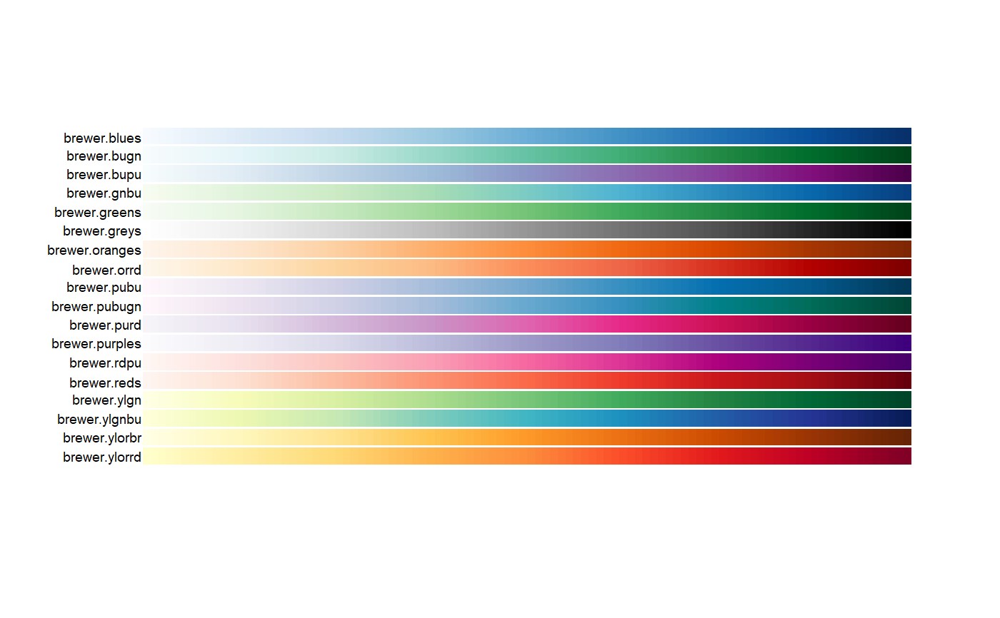
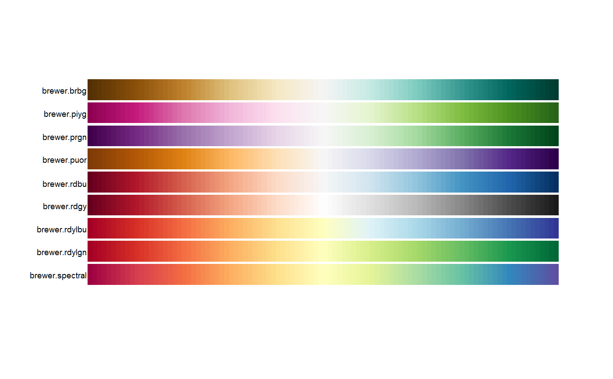
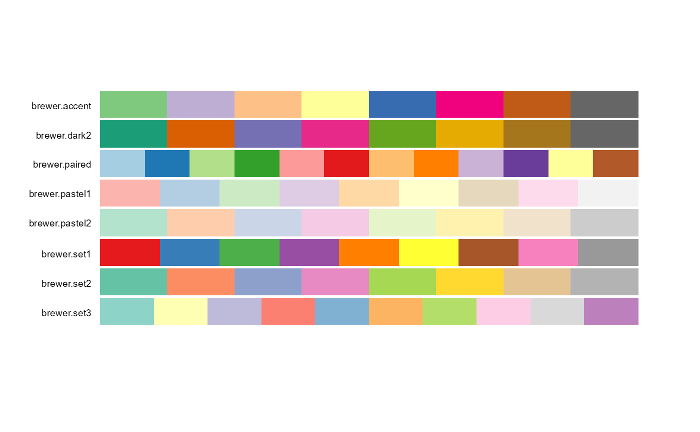

brewer.RdThese functions provide a unified access to the ColorBrewer palettes.
brewer.blues(n) brewer.bugn(n) brewer.bupu(n) brewer.gnbu(n) brewer.greens(n) brewer.greys(n) brewer.oranges(n) brewer.orrd(n) brewer.pubu(n) brewer.pubugn(n) brewer.purd(n) brewer.purples(n) brewer.rdpu(n) brewer.reds(n) brewer.ylgn(n) brewer.ylgnbu(n) brewer.ylorbr(n) brewer.ylorrd(n) brewer.brbg(n) brewer.piyg(n) brewer.prgn(n) brewer.puor(n) brewer.rdbu(n) brewer.rdgy(n) brewer.rdylbu(n) brewer.rdylgn(n) brewer.spectral(n) brewer.accent(n) brewer.dark2(n) brewer.paired(n) brewer.pastel1(n) brewer.pastel2(n) brewer.set1(n) brewer.set2(n) brewer.set3(n)
| n | The number of colors to display for palette functions. |
|---|
A vector of colors.
The palette names begin with 'brewer' to make it easier to use auto-completion.
# Sequential pal.bands(brewer.blues, brewer.bugn, brewer.bupu, brewer.gnbu, brewer.greens, brewer.greys, brewer.oranges, brewer.orrd, brewer.pubu, brewer.pubugn, brewer.purd, brewer.purples, brewer.rdpu, brewer.reds, brewer.ylgn, brewer.ylgnbu, brewer.ylorbr, brewer.ylorrd)# Diverging pal.bands(brewer.brbg, brewer.piyg, brewer.prgn, brewer.puor, brewer.rdbu, brewer.rdgy, brewer.rdylbu, brewer.rdylgn, brewer.spectral)# Qualtitative pal.bands(brewer.accent(8), brewer.dark2(8), brewer.paired(12), brewer.pastel1(9), brewer.pastel2(8), brewer.set1(9), brewer.set2(8), brewer.set3(10), labels=c("brewer.accent", "brewer.dark2", "brewer.paired", "brewer.pastel1", "brewer.pastel2", "brewer.set1", "brewer.set2", "brewer.set3"))if (FALSE) { # Sequential pal.test(brewer.blues) pal.test(brewer.bugn) pal.test(brewer.bupu) pal.test(brewer.gnbu) pal.test(brewer.greens) pal.test(brewer.greys) pal.test(brewer.oranges) pal.test(brewer.orrd) pal.test(brewer.pubu) # good pal.test(brewer.pubugn) # good pal.test(brewer.purd) pal.test(brewer.purples) pal.test(brewer.rdpu) pal.test(brewer.reds) pal.test(brewer.ylgn) pal.test(brewer.ylgnbu) pal.test(brewer.ylorbr) pal.test(brewer.ylorrd) # Diverging, max n=11 colors pal.test(brewer.brbg) pal.test(brewer.piyg) pal.test(brewer.prgn) pal.test(brewer.puor) pal.test(brewer.rdbu) pal.test(brewer.rdgy) pal.test(brewer.rdylbu) pal.test(brewer.rdylgn) pal.test(brewer.spectral) # Qualtitative. These are weird...don't do this pal.test(brewer.accent) pal.test(brewer.dark2) pal.test(brewer.paired) pal.test(brewer.pastel1) pal.test(brewer.pastel2) pal.test(brewer.set1) pal.test(brewer.set2) pal.test(brewer.set3) # Need to move these to 'tests' pal.bands(brewer.accent(3), brewer.accent(4), brewer.accent(5), brewer.accent(6), brewer.accent(7), brewer.accent(8), brewer.accent(9), brewer.accent(10), brewer.accent(11), brewer.accent(12)) #brewer.purd(1) # Should err #brewer.purd(2) # Should err brewer.purd(3) brewer.purd(9) brewer.purd(25) pal.bands(brewer.purd(3), brewer.purd(4), brewer.purd(5), brewer.purd(6), brewer.purd(7), brewer.purd(8), brewer.purd(9), brewer.purd(10), brewer.purd(11), brewer.purd(12), brewer.purd(13), brewer.purd(14), brewer.purd(15), brewer.purd(100)) }